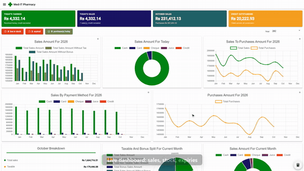
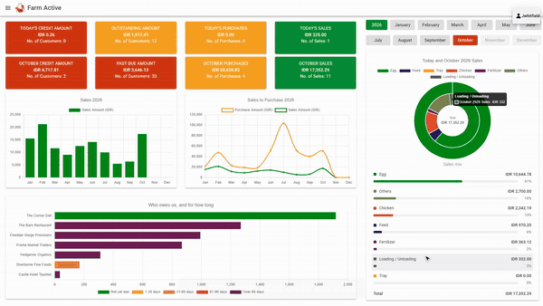

Awad Luckhoo
Senior software engineer. Two ERPs I designed, built and deployed on my own, both in daily production use. Each has a short narrated demo.

Med-IT
Pharmacy ERP · 2-minute demo
Point of sale with prescriptions, batch and expiry control, credit customers, and built-in compliance.
Watch the demo →
Farm Active
Poultry & farm ERP · 4-minute demo
Multi-tenant and multi-site, with integrated double-entry accounting, flock management and production reporting.
Watch the demo →